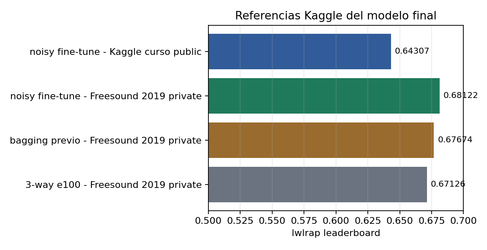
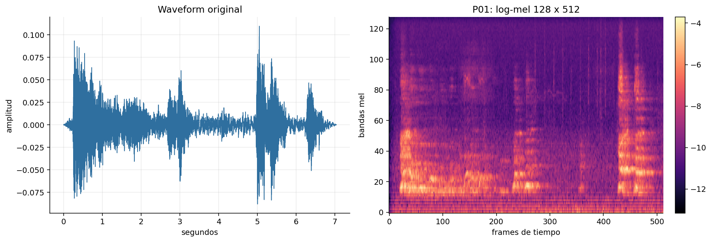
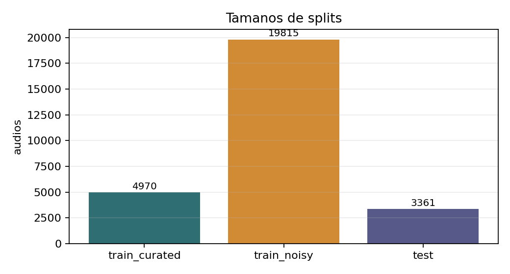
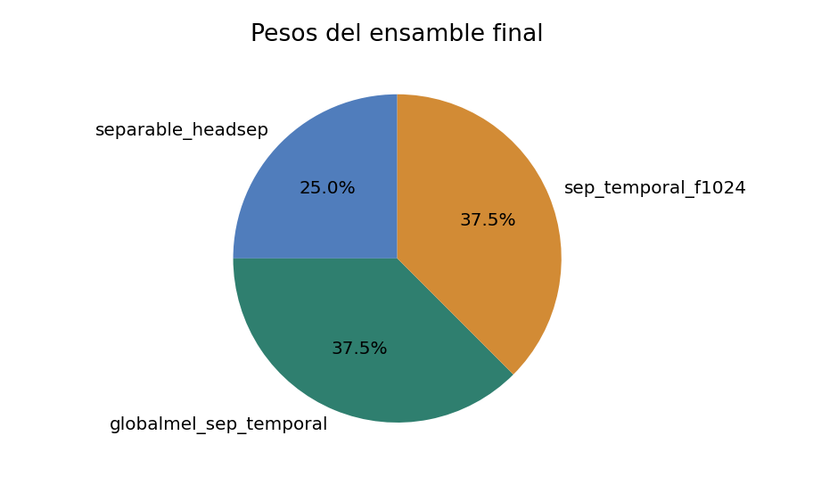
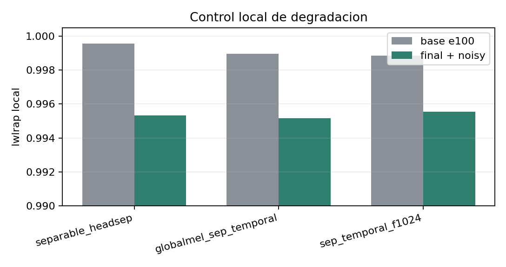

0.68122
Freesound 2019 private
0.64307
Kaggle del curso public
+0.00996
contra 3-way e100 previo

Taller de Aprendizaje Automático
El punto final pasa a ser el ensamble 3-way con fine-tuning controlado sobre noisy.

Problema

Datos

| Split | Rol |
|---|---|
| train_curated | Etiquetas confiables para aprender la base. |
| train_noisy | Más cobertura, pero confianza parcial. |
| test | 3361 audios para submission. |
Representación
Modelo base

Hipótesis final
Augmentation
El conjunto noisy entra como fuente de cobertura y regularización, no como verdad con el mismo peso que curated.
Control local

Resultados
| Referencia | Score | Lectura |
|---|---|---|
| 3-way e100 anterior | 0.67126 | punto final previo |
| Mejor variante previa | 0.67674 | bagging más complejo |
| Noisy fine-tune Freesound 2019 | 0.68122 | nuevo mejor score |
| Noisy fine-tune Kaggle curso | 0.64307 | variante de datos del curso |
Entrega
Primero aprender de curated. Luego usar noisy con confianza parcial. Esa política mejora sin perder claridad conceptual.